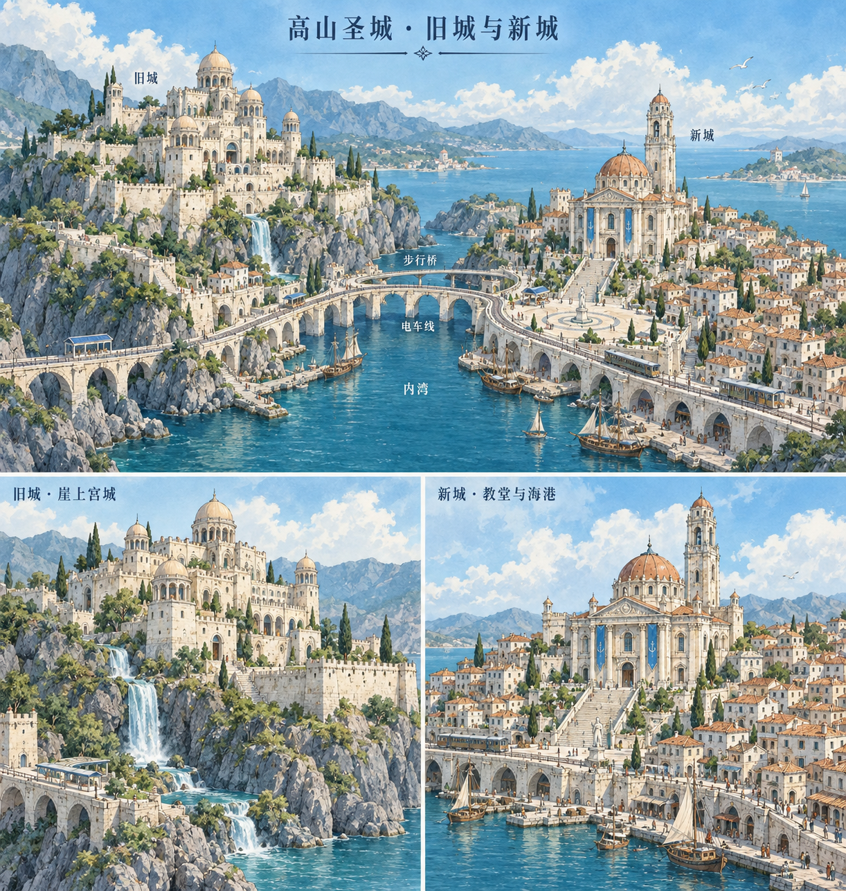

<!doctype html><meta charset="utf-8"><title>高山圣城真实山体副本 · 同机位几何对照</title><style>body{margin:0;background:#b9d4e4;font:14px system-ui}nav{position:fixed;top:8px;left:8px;background:#fffe;padding:10px;z-index:3;max-width:700px}button{margin:3px}pre{font-size:11px;white-space:pre-wrap;max-height:72px;overflow:auto}aside{position:fixed;right:10px;bottom:10px;background:#fff9;padding:5px;font-size:11px}aside img{width:240px}</style><nav>真实正式山体导出副本；无建筑不代表正式建筑被删除。<br><button id="before">修改前</button><button id="after">候选后</button><button id="domain">保护域开关</button><button id="shade">平面/平滑</button><button data-view="overview">全景</button><button data-view="rear">后山</button><button data-view="peak">主峰近景</button><button data-view="saddle">鞍部</button><pre id="status">等待实际baseline.json</pre></nav><aside>已有圣城造型参考（非本次运行画面）<br></aside><script type="importmap">{"imports":{"three":"../../../vendor/three.module.js"}}</script><script type="module">
import{finishMountainRockSurface}from'../../../src/world/citadel/mountainRockSurfaceFinish.js';import * as T from'three';const status=document.querySelector('#status');import{shapeCitadelCliffShoulders}from'../../../src/world/citadel/targetCliffShoulderGeometry.js';import{softenCitadelMountainGeometry,citadelSoftMountainDomain}from'../../../src/world/citadel/targetSoftMountainGeometry.js';
const renderer=new T.WebGLRenderer({antialias:true});renderer.setSize(innerWidth,innerHeight);renderer.setPixelRatio(Math.min(devicePixelRatio,1.5));renderer.outputColorSpace=T.SRGBColorSpace;renderer.toneMapping=T.ACESFilmicToneMapping;renderer.toneMappingExposure=1.1;document.body.append(renderer.domElement);const scene=new T.Scene();scene.background=new T.Color('#b9d4e4');scene.add(new T.HemisphereLight(0xeaf5ff,0x59676c,2));const sun=new T.DirectionalLight(0xfff4dc,2.7);sun.position.set(-110,180,100);scene.add(sun);const camera=new T.PerspectiveCamera(50,innerWidth/innerHeight,.1,2500);
try{const file=new URLSearchParams(location.search).get('data')||'root-verification/actual-final-before.json',response=await fetch(file);if(!response.ok)throw Error(file+' '+response.status);const data=await response.json(),geometry=new T.BufferGeometryLoader().parse(data.geometry),toChart=new T.Matrix4().fromArray(data.toChart),after=geometry.clone(),rails=await(await fetch('root-verification/actual-rails-before.json')).json(),railPoints=Object.values(rails.curves).flatMap(c=>c.points.map(p=>new T.Vector3().fromArray(p))),started=performance.now(),cliff=shapeCitadelCliffShoulders(after,{toChart,castleMatrix:new T.Matrix4().fromArray(data.castleMatrixWorld),railPoints,softRearRims:true,softCutCaps:true}),report={cliff,rear:softenCitadelMountainGeometry(after,{toChart,castleMatrix:new T.Matrix4().fromArray(data.castleMatrixWorld),railPoints,softRearRims:true,softCutCaps:true})},buildMs=performance.now()-started;
const normalFinish=finishMountainRockSurface(after,{enabled:true,toCastle:toChart,relax:false,protectedFace:points=>points.some(p=>p.y<3||(p.z>0&&Math.abs(p.x)<75))});after.copy(normalFinish.geometry);normalFinish.geometry.dispose();
const material=new T.MeshStandardMaterial({color:0xbac3bd,roughness:.94,flatShading:true,side:T.DoubleSide}),oldMesh=new T.Mesh(geometry,material),newMesh=new T.Mesh(after,material);for(const mesh of[oldMesh,newMesh]){mesh.matrixAutoUpdate=false;mesh.matrix.copy(toChart);scene.add(mesh);}oldMesh.visible=false;let mode='after',debug=false;
function draw(){renderer.render(scene,camera);status.textContent=JSON.stringify({mode,file,scope:'r5 unbuilt rear rim candidate with actual rail and cut collars; actual exported final geometry; new cliff/rear pass only, no second old finish, not live game',report,buildMs},null,2);}
function view(v){const [p,q,fov]={overview:[[0,68,220],[0,10,5],50],rear:[[-100,90,-125],[-30,22,-30],52],peak:[[-125,66,-78],[-82,29,-32],48],saddle:[[0,51,-83],[0,12,-34],48]}[v];camera.position.set(...p);camera.up.set(0,1,0);camera.lookAt(...q);camera.fov=fov;camera.updateProjectionMatrix();draw();}
function domain(){debug=!debug;for(const g of[geometry,after]){const p=g.attributes.position,c=[];for(let i=0;i<p.count;i++){const q=new T.Vector3().fromBufferAttribute(p,i).applyMatrix4(toChart),d=citadelSoftMountainDomain(q),color=new T.Color(d.weight>0?0xe39852:0x68b4c8);c.push(color.r,color.g,color.b);}g.setAttribute('color',new T.Float32BufferAttribute(c,3));}material.vertexColors=debug;material.color.set(debug?0xffffff:0xbac3bd);material.needsUpdate=true;draw();}
before.onclick=()=>{mode='before';oldMesh.visible=true;newMesh.visible=false;draw();};document.querySelector('#after').onclick=()=>{mode='after';oldMesh.visible=false;newMesh.visible=true;draw();};document.querySelector('#domain').onclick=domain;document.querySelector('#shade').onclick=()=>{material.flatShading=!material.flatShading;material.needsUpdate=true;draw();};document.querySelectorAll('[data-view]').forEach(b=>b.onclick=()=>view(b.dataset.view));window.__citadelMountainReview={scene,camera,renderer,report,view,source:data.report};view('overview');addEventListener('resize',()=>{camera.aspect=innerWidth/innerHeight;camera.updateProjectionMatrix();renderer.setSize(innerWidth,innerHeight);draw();});
}catch(e){status.textContent='尚未可用：'+e.stack;console.error(e);}
</script>
